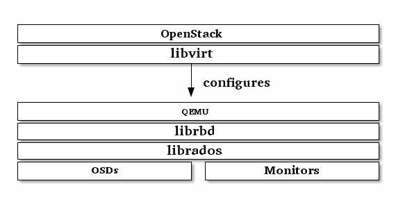

Block Devices and OpenStack¶
You may use Ceph Block Device images with OpenStack through libvirt, which configures the QEMU interface to librbd. Ceph stripes block device images as objects across the cluster, which means that large Ceph Block Device images have better performance than a standalone server!
To use Ceph Block Devices with OpenStack, you must install QEMU, libvirt, and OpenStack first. We recommend using a separate physical node for your OpenStack installation. OpenStack recommends a minimum of 8GB of RAM and a quad-core processor. The following diagram depicts the OpenStack/Ceph technology stack.

Important
To use Ceph Block Devices with OpenStack, you must have access to a running Ceph Storage Cluster.
Three parts of OpenStack integrate with Ceph’s block devices:
- Images: OpenStack Glance manages images for VMs. Images are immutable. OpenStack treats images as binary blobs and downloads them accordingly.
- Volumes: Volumes are block devices. OpenStack uses volumes to boot VMs, or to attach volumes to running VMs. OpenStack manages volumes using Cinder services.
- Guest Disks: Guest disks are guest operating system disks. By default, when you boot a virtual machine, its disk appears as a file on the filesystem of the hypervisor (usually under /var/lib/nova/instances/<uuid>/). Prior to OpenStack Havana, the only way to boot a VM in Ceph was to use the boot-from-volume functionality of Cinder. However, now it is possible to boot every virtual machine inside Ceph directly without using Cinder, which is advantageous because it allows you to perform maintenance operations easily with the live-migration process. Additionally, if your hypervisor dies it is also convenient to trigger nova evacuate and run the virtual machine elsewhere almost seamlessly.
You can use OpenStack Glance to store images in a Ceph Block Device, and you can use Cinder to boot a VM using a copy-on-write clone of an image.
The instructions below detail the setup for Glance, Cinder and Nova, although they do not have to be used together. You may store images in Ceph block devices while running VMs using a local disk, or vice versa.
Important
Ceph doesn’t support QCOW2 for hosting a virtual machine disk. Thus if you want to boot virtual machines in Ceph (ephemeral backend or boot from volume), the Glance image format must be RAW.
Tip
This document describes using Ceph Block Devices with OpenStack Havana. For earlier versions of OpenStack see Block Devices and OpenStack (Dumpling).
Create a Pool¶
By default, Ceph block devices use the rbd pool. You may use any available pool. We recommend creating a pool for Cinder and a pool for Glance. Ensure your Ceph cluster is running, then create the pools.
ceph osd pool create volumes 128
ceph osd pool create images 128
ceph osd pool create backups 128
ceph osd pool create vms 128
See Create a Pool for detail on specifying the number of placement groups for your pools, and Placement Groups for details on the number of placement groups you should set for your pools.
Configure OpenStack Ceph Clients¶
The nodes running glance-api, cinder-volume, nova-compute and cinder-backup act as Ceph clients. Each requires the ceph.conf file:
ssh {your-openstack-server} sudo tee /etc/ceph/ceph.conf </etc/ceph/ceph.conf
Install Ceph client packages¶
On the glance-api node, you’ll need the Python bindings for librbd:
sudo apt-get install python-rbd
sudo yum install python-rbd
On the nova-compute, cinder-backup and on the cinder-volume node, use both the Python bindings and the client command line tools:
sudo apt-get install ceph-common
sudo yum install ceph
Setup Ceph Client Authentication¶
If you have cephx authentication enabled, create a new user for Nova/Cinder and Glance. Execute the following:
ceph auth get-or-create client.cinder mon 'allow r' osd 'allow class-read object_prefix rbd_children, allow rwx pool=volumes, allow rwx pool=vms, allow rx pool=images'
ceph auth get-or-create client.glance mon 'allow r' osd 'allow class-read object_prefix rbd_children, allow rwx pool=images'
ceph auth get-or-create client.cinder-backup mon 'allow r' osd 'allow class-read object_prefix rbd_children, allow rwx pool=backups'
Add the keyrings for client.cinder, client.glance, and client.cinder-backup to the appropriate nodes and change their ownership:
ceph auth get-or-create client.glance | ssh {your-glance-api-server} sudo tee /etc/ceph/ceph.client.glance.keyring
ssh {your-glance-api-server} sudo chown glance:glance /etc/ceph/ceph.client.glance.keyring
ceph auth get-or-create client.cinder | ssh {your-volume-server} sudo tee /etc/ceph/ceph.client.cinder.keyring
ssh {your-cinder-volume-server} sudo chown cinder:cinder /etc/ceph/ceph.client.cinder.keyring
ceph auth get-or-create client.cinder-backup | ssh {your-cinder-backup-server} sudo tee /etc/ceph/ceph.client.cinder-backup.keyring
ssh {your-cinder-backup-server} sudo chown cinder:cinder /etc/ceph/ceph.client.cinder-backup.keyring
Nodes running nova-compute need the keyring file for the nova-compute process:
ceph auth get-or-create client.cinder | ssh {your-nova-compute-server} sudo tee /etc/ceph/ceph.client.cinder.keyring
They also need to store the secret key of the client.cinder user in libvirt. The libvirt process needs it to access the cluster while attaching a block device from Cinder.
Create a temporary copy of the secret key on the nodes running nova-compute:
ceph auth get-key client.cinder | ssh {your-compute-node} tee client.cinder.key
Then, on the compute nodes, add the secret key to libvirt and remove the temporary copy of the key:
uuidgen
457eb676-33da-42ec-9a8c-9293d545c337
cat > secret.xml <<EOF
<secret ephemeral='no' private='no'>
<uuid>457eb676-33da-42ec-9a8c-9293d545c337</uuid>
<usage type='ceph'>
<name>client.cinder secret</name>
</usage>
</secret>
EOF
sudo virsh secret-define --file secret.xml
Secret 457eb676-33da-42ec-9a8c-9293d545c337 created
sudo virsh secret-set-value --secret 457eb676-33da-42ec-9a8c-9293d545c337 --base64 $(cat client.cinder.key) && rm client.cinder.key secret.xml
Save the uuid of the secret for configuring nova-compute later.
Important
You don’t necessarily need the UUID on all the compute nodes. However from a platform consistency perspective, it’s better to keep the same UUID.
Configure OpenStack to use Ceph¶
Configuring Glance¶
Glance can use multiple back ends to store images. To use Ceph block devices by default, configure Glance like the following.
Prior to Juno¶
Edit /etc/glance/glance-api.conf and add under the [DEFAULT] section:
default_store = rbd
rbd_store_user = glance
rbd_store_pool = images
rbd_store_chunk_size = 8
Juno¶
Edit /etc/glance/glance-api.conf and add under the [glance_store] section:
[DEFAULT]
...
default_store = rbd
...
[glance_store]
stores = rbd
rbd_store_pool = images
rbd_store_user = glance
rbd_store_ceph_conf = /etc/ceph/ceph.conf
rbd_store_chunk_size = 8
For more information about the configuration options available in Glance please see: http://docs.openstack.org/trunk/config-reference/content/section_glance-api.conf.html.
Important
Glance has not completely moved to ‘store’ yet. So we still need to configure the store in the DEFAULT section.
Any OpenStack version¶
If you want to enable copy-on-write cloning of images, also add under the [DEFAULT] section:
show_image_direct_url = True
Note that this exposes the back end location via Glance’s API, so the endpoint with this option enabled should not be publicly accessible.
Disable the Glance cache management to avoid images getting cached under /var/lib/glance/image-cache/, assuming your configuration file has flavor = keystone+cachemanagement:
[paste_deploy]
flavor = keystone
Configuring Cinder¶
OpenStack requires a driver to interact with Ceph block devices. You must also specify the pool name for the block device. On your OpenStack node, edit /etc/cinder/cinder.conf by adding:
volume_driver = cinder.volume.drivers.rbd.RBDDriver
rbd_pool = volumes
rbd_ceph_conf = /etc/ceph/ceph.conf
rbd_flatten_volume_from_snapshot = false
rbd_max_clone_depth = 5
rbd_store_chunk_size = 4
rados_connect_timeout = -1
glance_api_version = 2
If you’re using cephx authentication, also configure the user and uuid of the secret you added to libvirt as documented earlier:
rbd_user = cinder
rbd_secret_uuid = 457eb676-33da-42ec-9a8c-9293d545c337
Note that if you are configuring multiple cinder back ends, glance_api_version = 2 must be in the [DEFAULT] section.
Configuring Cinder Backup¶
OpenStack Cinder Backup requires a specific daemon so don’t forget to install it. On your Cinder Backup node, edit /etc/cinder/cinder.conf and add:
backup_driver = cinder.backup.drivers.ceph
backup_ceph_conf = /etc/ceph/ceph.conf
backup_ceph_user = cinder-backup
backup_ceph_chunk_size = 134217728
backup_ceph_pool = backups
backup_ceph_stripe_unit = 0
backup_ceph_stripe_count = 0
restore_discard_excess_bytes = true
Configuring Nova to attach Ceph RBD block device¶
In order to attach Cinder devices (either normal block or by issuing a boot from volume), you must tell Nova (and libvirt) which user and UUID to refer to when attaching the device. libvirt will refer to this user when connecting and authenticating with the Ceph cluster.
rbd_user = cinder
rbd_secret_uuid = 457eb676-33da-42ec-9a8c-9293d545c337
These two flags are also used by the Nova ephemeral backend.
Configuring Nova¶
In order to boot all the virtual machines directly into Ceph, you must configure the ephemeral backend for Nova.
It is recommended to enable the RBD cache in your Ceph configuration file (enabled by default since Giant). Moreover, enabling the admin socket brings a lot of benefits while troubleshoothing. Having one socket per virtual machine using a Ceph block device will help investigating performance and/or wrong behaviors.
This socket can be accessed like this:
ceph daemon /var/run/ceph/ceph-client.cinder.19195.32310016.asok help
Now on every compute nodes edit your Ceph configuration file:
[client]
rbd cache = true
rbd cache writethrough until flush = true
admin socket = /var/run/ceph/$cluster-$type.$id.$pid.$cctid.asok
Tip
If your virtual machine is already running you can simply restart it to get the socket
Havana and Icehouse¶
Havana and Icehouse require patches to implement copy-on-write cloning and fix bugs with image size and live migration of ephemeral disks on rbd. These are available in branches based on upstream Nova stable/havana and stable/icehouse. Using them is not mandatory but highly recommended in order to take advantage of the copy-on-write clone functionality.
On every Compute node, edit /etc/nova/nova.conf and add:
libvirt_images_type = rbd
libvirt_images_rbd_pool = vms
libvirt_images_rbd_ceph_conf = /etc/ceph/ceph.conf
libvirt_disk_cachemodes="network=writeback"
rbd_user = cinder
rbd_secret_uuid = 457eb676-33da-42ec-9a8c-9293d545c337
It is also a good practice to disable file injection. While booting an instance, Nova usually attempts to open the rootfs of the virtual machine. Then, Nova injects values such as password, ssh keys etc. directly into the filesystem. However, it is better to rely on the metadata service and cloud-init.
On every Compute node, edit /etc/nova/nova.conf and add:
libvirt_inject_password = false
libvirt_inject_key = false
libvirt_inject_partition = -2
To ensure a proper live-migration, use the following flags:
libvirt_live_migration_flag="VIR_MIGRATE_UNDEFINE_SOURCE,VIR_MIGRATE_PEER2PEER,VIR_MIGRATE_LIVE,VIR_MIGRATE_PERSIST_DEST"
Juno¶
In Juno, Ceph block device was moved under the [libvirt] section. On every Compute node, edit /etc/nova/nova.conf under the [libvirt] section and add:
[libvirt]
images_type = rbd
images_rbd_pool = vms
images_rbd_ceph_conf = /etc/ceph/ceph.conf
rbd_user = cinder
rbd_secret_uuid = 457eb676-33da-42ec-9a8c-9293d545c337
disk_cachemodes="network=writeback"
It is also a good practice to disable file injection. While booting an instance, Nova usually attempts to open the rootfs of the virtual machine. Then, Nova injects values such as password, ssh keys etc. directly into the filesystem. However, it is better to rely on the metadata service and cloud-init.
On every Compute node, edit /etc/nova/nova.conf and add the following under the [libvirt] section:
inject_password = false
inject_key = false
inject_partition = -2
To ensure a proper live-migration, use the following flags:
live_migration_flag="VIR_MIGRATE_UNDEFINE_SOURCE,VIR_MIGRATE_PEER2PEER,VIR_MIGRATE_LIVE,VIR_MIGRATE_PERSIST_DEST"
Restart OpenStack¶
To activate the Ceph block device driver and load the block device pool name into the configuration, you must restart OpenStack. Thus, for Debian based systems execute these commands on the appropriate nodes:
sudo glance-control api restart
sudo service nova-compute restart
sudo service cinder-volume restart
sudo service cinder-backup restart
For Red Hat based systems execute:
sudo service openstack-glance-api restart
sudo service openstack-nova-compute restart
sudo service openstack-cinder-volume restart
sudo service openstack-cinder-backup restart
Once OpenStack is up and running, you should be able to create a volume and boot from it.
Booting from a Block Device¶
You can create a volume from an image using the Cinder command line tool:
cinder create --image-id {id of image} --display-name {name of volume} {size of volume}
Note that image must be RAW format. You can use qemu-img to convert from one format to another. For example:
qemu-img convert -f {source-format} -O {output-format} {source-filename} {output-filename}
qemu-img convert -f qcow2 -O raw precise-cloudimg.img precise-cloudimg.raw
When Glance and Cinder are both using Ceph block devices, the image is a copy-on-write clone, so it can create a new volume quickly. In the OpenStack dashboard, you can boot from that volume by performing the following steps:
- Launch a new instance.
- Choose the image associated to the copy-on-write clone.
- Select ‘boot from volume’
- Select the volume you created.